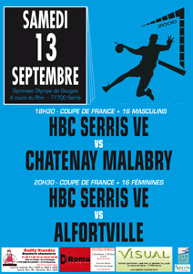

|
|
 |
| Centre Social Intercommunal |
| FRANCE Ô FOLIES : APPEL À CANDIDATURE |
Musiciens du Val d'Europe (hip hop, reggae, rock, chanson, electro, métal, pop, world, jazz..) Jouer sur la grande scène des Francofolies de La Rochelle, ça vous tente ?
- Appel à candidature jusqu'au 15 avril.
- Jury de sélection : 18 avril 2014.
- Concert à File 7 : 13 mai 2014.
Envoyez un mail à Jonathan : accompagnement@file7.com
> Plus d'informations sur www.file7.com |
|
|
| Du mercredi 5 février au samedi 30 août, médiathèques du Val d'Europe |
Du mercredi 5 février au samedi 30 août 2014, le réseau des médiathèques du SAN du Val d'Europe vous invite à découvrir sa nouvelle exposition sur le thème de l'eau : un parcours documentaire, multi-supports, original et ludique à travers les collections de la Médiathèque du Val d'Europe.
> + d'infos
> Site du réseau des médiathèques du Val d'Europe
|
|
 |
| Samedi 1er et dimanche 2 mars, de 9h30 à 17h30, gymnase Olympe de Gouges |
Samedi 1er mars, de 9h30 à 17h30
Tournoi U16 Féminines
Dimanche 2 mars, de 9h30 à 17h30
Tournoi en salle U12
> http://vefc.footeo.com/
|
|
 |
| Du 3 au 14 mars, Hôtel de Ville de Serris |
Inscription pour le centre de loisirs pour les vacances de printemps, auprès du service Accueil Famille ou sur l'Espace Famille
En raison d'un grand nombre de demandes, l'organisation pour les vacances de printemps sera la suivante :
- les enfants scolarisés à Robert Doisneau et Jean de La Fontaine seront accueillisà l'Île aux Enfants
- les enfants scolarisés à Jules Verne et Henri Matisse seront accueillis à 123 Soleil
|
| ATT SERRIS VAL D'EUROPE - PRO A FÉMININE |
| Mardi 4 mars, 19h30, gymnase Éric Tabarly |
| INTERLIGUES DE HANDBALL |
| Vendredi 7, samedi 8 et dimanche 9 mars, Gymnases Olympe de Gouges et Éric Tabarly |
Championnat de France -Interligues de Handball
2e tour zone nord ouest
Bretagne - Île de France Est- Normandie - Pays de la Loire - Picardie - Nord Pas de Calais
Entrée libre
> www.hbcve.fr |
|
 |
| EXPOSITION : AFFICHES DE GUERRE 1914/1918 |
| Du 7 au 20 mars, salle Éléonore, école Tournesol, Chessy |
À l'occasion du centenaire de la Première Guerre Mondiale, la commune de Chessy rendra hommage aux soldats de la grande guerre au travers de différentes actions culturelles, à partir de 2014 et jusqu'en 2018.
Cette deuxième exposition, réalisée et prêtée par les Archives départementales, présente autour du thème "Mobiliser la population", les reproductions de vint-cinq affiches de la période de la Première Guerre mondiale, issues de la collection Taboureau conservée aux Archives départementales, évoquent les acteurs du conflit, l'engagement de la population, les moyens militaires mis en œuvre et l'après-guerre.
Salle Éléonore - école Tournesol
(visible de l'extérieur - côté rue)
Rue du bois de Paris - Chessy (centre urbain)
www.chessy77.fr |
|
|
| Samedi 8 mars 2014, 14h00, Maison communale des 4 Saisons |
| LE CSI FÊTE LA JOURNÉE DE LA FEMME |
| Samedi 8 mars 2014, à partir de 19h00, Centre Social Intercommunal |
Le CSI fête la journée de la femme.
Animations conviviales
- apéro dînatoire entre femmes.
- chaque participante apporte un
repas à partager.
Inscription nécessaire au 01 78 71 40 90
> Centre Social Intercommunal |
|
|
| L'IMPORTANCE D'ÊTRE WILDE |
Théâtre contemporain
Durée : 1h15. - À partir de 12 ans - Tarif : A
www.envotrecompagnie.fr
> En savoir +
"La mise en scène de Philippe Person, ludique et cocasse, multiplie les clins d'œil et les décalages. C'est brillant, à l'image de la personnalité du poète dandy." Télérama TT |
|
 |
| VENTE PAR ADJUDICATION VOLONTAIRE PAR LA COMMUNE DE SERRIS |
| Mardi 11 mars, 15h00, Mairie du Bourg - 12 rue Émile Cloud |
Un terrain à bâtir à Serris (77) Rue de l'École
Désignation du bien mis en vente : un terrain d'une superficie de 208 m².
Cadastré section B numéro 82 comportant une surface de plancher maximale de 155 m².
Mise à prix : 54.000 Euros. Prix payable comptant.
Outre les charges et conditions insérées au cahier des charges.
Entrée en jouissance : le jour du paiement du prix de l'adjudication.
Le bien est libre de toute location ou occupation.
Consignation pour enchérir : les amateurs devront impérativement consigner avant la vente à l'office Notarial "I.AREZES, O.BOISSEAU, C.LE GUYADER et S.CASTELA" la somme de 5.400 Euros par chèque établi directement par la banque à l'ordre de Maître Isabelle AREZES, Notaire.
Frais : à la charge de l'adjudicataire.
Renseignements : Maître Isabelle AREZES, Notaire à LAGNY-SUR-MARNE (77 400) 9 Rue d'Austerlitz, détenteur du Cahier des Charges
Tel : 01 64 12 40 40
Visites sur place sur rendez-vous
HÔTEL DE VILLE DE SERRIS - Madame Sylvie LEVY : Tel : 01 60 43 52 00 - s.levy@mairie-serris.net |
|
|
| |
 |
Conférences sur l'art moderne et contemporain
Entrée libre
> En savoir + |
|
 |
| PORTES OUVERTES CFA AFT IFTM DE NOISEIL |
| Vendredi 14 et samedi 15 mars, de 9h00 à 17h00 |
Journées portes ouvertes 2014 :
les métiers du transport et de la logistique recrutent
AFT IFTIM FC - 15 rue de la Mare Blanche - 77186 Noisiel
Tél. : 01 64 11 59 60
www.metierstransportlogistique.com
|
|
|
| HBCVE - HANDBALL - CHAMPIONNAT DE FRANCE NATIONALE 3 |
| Samedi 15 mars, 21h00, gymnase Olympe de Gouges, Entrée libre |
HBCVE vs PONTAULT COMBAULT
Senior équipe A, catégorie plus de 16 ans Garçons 1
> www.hbcve.fr |
|
 |
Très jeune public
Durée : 0h35 -
À partir de 18 mois - Tarif C : 2 euros
www.akentrepot.fr
> En savoir +
"Tout est dit en rondeur dans ce spectacle sur les prémices de la vie avec fragilité, avec gourmandise et une très très grande douceur, pour les touts petits, une recherche esthétique ; il parle ce spectacle à l'intimité de chacun." France Inter |
|
 |
| Salon de l'apprentissage et de l'alternance de l'Est parisien |
| Vendredi 21 mars, de 14h à 18h et samedi 22 mars de 10h à 18h, Dôme Disney Village |
Du CAP au BAC +5, venez trouver votre formation et décrocher un contrat d'apprentissage ou de professionnalisation.
N'oubliez pas votre CV.
Formations, entreprises : 50 exposants. Conférences et rencontres.
Invitations gratuites sur letudiant.fr |
|
 |
| Samedi 22 mars 2014, 14h00, Maison communale des 4 Saisons |
| Samedi 22 mars 2014, de 18h00 à minuit, Centre aquatique du Val d'Europe |
Samedi 22 Mars 2014,
de 18h00 à minuit
"Centre Aquatique du Val d'Europe"
"Centre Aquatique Marne et Gondoire de Lagny/Marne"
Plongeons ensemble dans cette 7e édition de La Nuit de L'Eau.
Au programme : animations, jeux, expositions, surprises...
en vue d'une grande collecte de fonds au profit des programmes d'approvisionnement en eau potable et assainissement dans les écoles du Togo.
Venez nager pour la modique somme de 2 euros.
Baptêmes de plongée, initiation aquagym, aquabike… vous seront proposés ainsi que de multiples activités UNICEF.
Des lots récompenseront les participants enfants et adultes. |
|
 |
| 1ER TOUR DES ÉLECTIONS MUNICIPALES |
| Dimanche 23 mars, de 8h00 à 18h00, bureaux de vote |
Retrouver les pages élections du Serrissien 83 :
- élections municipales et communautaires
- le vote par procuration
-
quelle pièce d'identité pour voter ?
- Où devez-vous voter ?
- Bureau de vote 1 : Hôtel de Ville -
2 place Antoine Mauny
- Bureau de vote 2 : Mairie du Bourg -
12 rue Émile Cloud
- Bureau de vote 3 : salle polyvalente Robert Doisneau -
rue de l'Hermière
- Bureau de vote 4 : salle polyvalente Jules Verne -
avenue Émile Cloud
N'oubliez pas de vous munir d'une pièce d'identité pour voter. |
|
 |
| PORTES OUVERTES LES CHÊNES VITRAIL |
| Lundi 24 et mardi 25 mars 2014, de 10h à 12h30 et de 14h à 16h30, atelier rue de l'Hermière |
Travail traditionnel au « PLOMB »
Travail selon la méthode « TIFFANY »
FUSING et THERMOFORMAGE
ATELIER : rue de l'Hermière à Serris, à côté du stade de l'Hermière et du Club pré-ados
PRÉSIDENTE : movitrail@gmail.com
RENSEIGNEMENTS : theodora.tempere@gmail.com |
|
 |
| SANS LES MAINS ET EN DANSEUSE |
Récit à pédalage déjanté, poético-burlesque
Durée : 1h10 -
À partir de 12 ans - Tarif A : de 5 à 12 €
www.icimeme.fr
> En savoir +
"Sur un plateau, on lâche les mains, on libère le récit. On fait de sa vie transformée, le spectacle de tous et on porte la voix près du corps. On se met à son compte. Pas question de faire table rase de la tradition orale, juste dire et redire, adossé au mur, ou en danseuse sur un vélo imaginaire, que raconter des histoires a toujours rassemblé les hommes. XXIe siècle compris, y'a pas d'raison. Et à l'heure où tout le monde en raconte, des histoires, précisément, c'est une forme de résistance que d'en choisir des pas évidentes, pas classables, pas forcément compréhensibles du premier coup." France Culture |
|
 |
| 2E TOUR DES ÉLECTIONS MUNICIPALES |
| Dimanche 30 mars, de 8h00 à 18h00, bureaux de vote |
Retrouver les pages élections du Serrissien 83 :
- élections municipales et communautaires
- le vote par procuration
-
quelle pièce d'identité pour voter ?
- Où devez-vous voter ?
- Bureau de vote 1 : Hôtel de Ville -
2 place Antoine Mauny
- Bureau de vote 2 : Mairie du Bourg -
12 rue Émile Cloud
- Bureau de vote 3 : salle polyvalente Robert Doisneau -
rue de l'Hermière
- Bureau de vote 4 : salle polyvalente Jules Verne -
avenue Émile Cloud
N'oubliez pas de vous munir d'une pièce d'identité pour voter. |
|
|
| PHASE QUALIFICATIVE CHAMPIONNATS DE FRANCE DE CHEERLEADING |
| Dimanche 30 mars, à partir de 13h00, Gymnase Olympe de Gouges |
Organisé parLes Académies de Baseball et de Cheerleading du Val d'Europe (ABCVE).
Tarifs :
- 5 euros pour les adultes
- 3 € pour les familles nombreuses (3 enfants minimum), les enfants de 6 à 12 ans, les adhérents ABCVE et autres clubs de cheerleading.
- Gratuit pour les enfants de moins de 6 ans.
www.abcve.fr
contact@abcve.fr |
|
 |
| Dimanche 30 mars, à partir de 13h15, Gymnase ÉricTabarly |
Compétition d'escalade dédiée aux plus jeunes (microbes, poussins, benjamins).
Le principe de ce challenge est de se qualifier pour une voie de finale en grimpant 5 voies de qualification que les enfants choisissent. Plus la voie choisie est difficile, plus elle rapporte de points lorsqu'on arrive à son sommet.
Accueil des participants dès 12h30
Début de la compétition : 13h15
> www.reve-escalade.com |
|
 |
|
|
|